CONSUMPTION
GRAPHIC NOVEL EXPLORATION:
Untitled, GG http://paulgravett.com/articles/article/gaijin_mangaka
accessed 14/2
colour seems to be one of my main things at looking out for, both for inspiration and referencing. in these panels specifically, i love how they start from strictly a "black and white" or colourless palette, whereas the pop of this intense red for the blood is immediately emphasised - drawing attention-
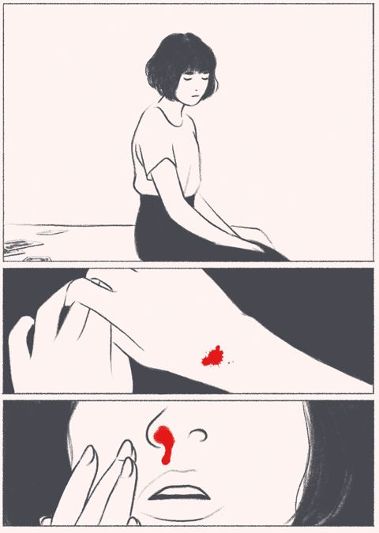
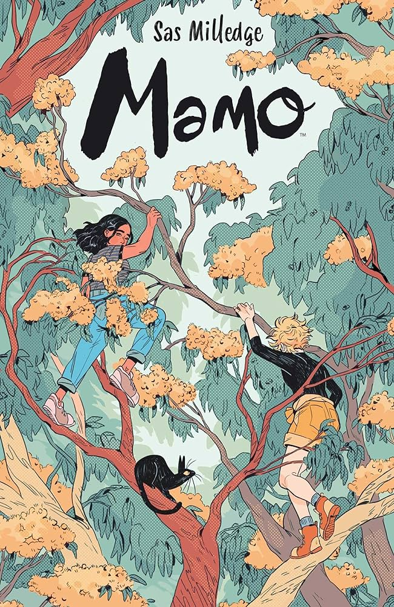
Mamo, Sas Milledge https://www.sasmilledge.com/mamo
AUDIENCE RECEPTION: ⭐⭐⭐⭐/5, GOODREADS
accessed 14/2
the cover and page colour palette particularly caught my eye, very monotonous in values - low in contrast as well makes it very easy on the eyes to enjoy.
suggests a storybook. comforting sort of aesthetic
Girl Juice, Benji Nate accessed 14/2 https://drawnandquarterly.com/books/girl-juice/
AUDIENCE RECEPTION: ⭐⭐⭐⭐/5, GOODREADS https://www.goodreads.com/en/book/show/62039160
the art style itself interested me. compared to your superhero and adventure focused graphic novels, nate adopts a pretty simplistic style that perfectly reflects the comedic and satire atmosphere of the plot. while minimal in detail, i like how nate is able to create such independent and recognisable characters that have so much personality and charm even in still panels.
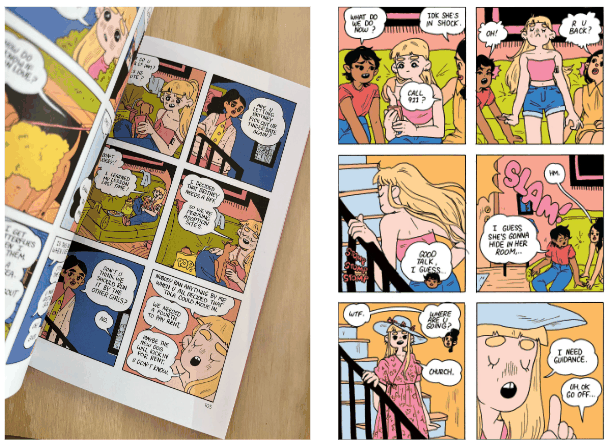
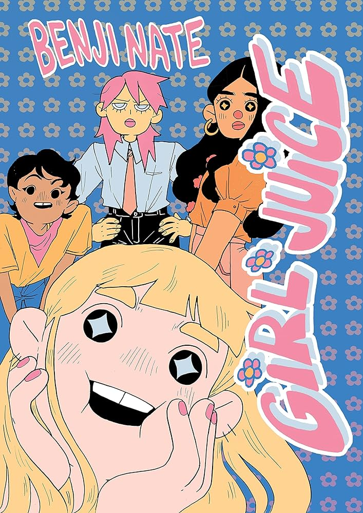
Seconds, Bryan Lee O'Malley accessed 16/2 https://www.booktopia.com.au/seconds-bryan-lee-omalley/book/9781906838881.html
AUDIENCE RECEPTION: ⭐⭐⭐⭐/5, GOODREADS https://www.goodreads.com/book/show/18630542-seconds?from_search=true&from_srp=true&qid=jaaIl97MKM&rank=2
i consumed this spread specifically because of the colours used, primarily the different variations of the primary colours; red, yellow and blue. its concise and limited colour palette is visually interesting and appealing to the eyes
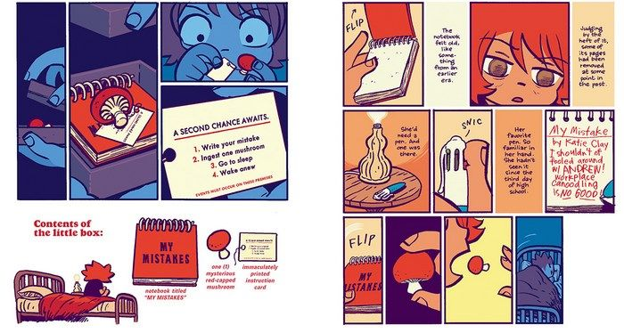
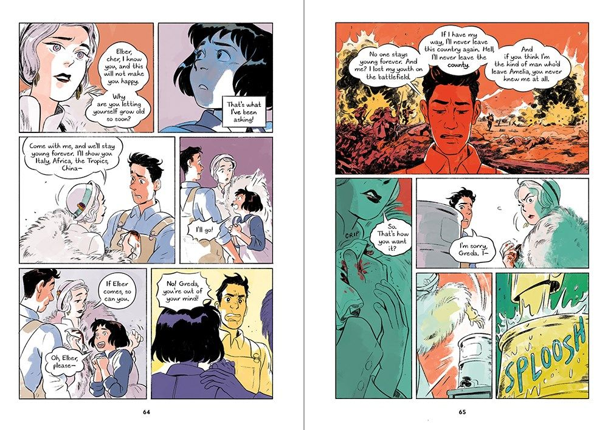
Salt Magic, Hope Larson, Rebecca Mark accessed 16/2 https://thebookwyrmsden.com/2021/10/15/salt-magic-by-hope-larson-and-rebecca-mock/
AUDIENCE RECEPTION: ⭐⭐⭐⭐/5, GOODREADS https://www.goodreads.com/book/show/55894337-salt-magic?from_search=true&from_srp=true&qid=ldHB3XtW41&rank=1
this image -spread- has been consumed at first when I had been researching graphic novels as an artform. what caught my attention was how the pages were coloured, being very vivid and generally flat in value, with minimal shading. where the darkest of darks are blacked conformed with the "stereotypical" comic-book aesthetic.
CODES & CONVENTIONS
COLOUR symbolic
Laura Dean Keeps Breaking Up With Me, Mariko Tamaki, Rosemary Valero-O'Connell accessed 20/2
AUDIENCE RECEPTION: ⭐⭐⭐⭐/5, GOODREADS https://www.goodreads.com/book/show/40864841-laura-dean-keeps-breaking-up-with-me?ref=nav_sb_ss_1_10
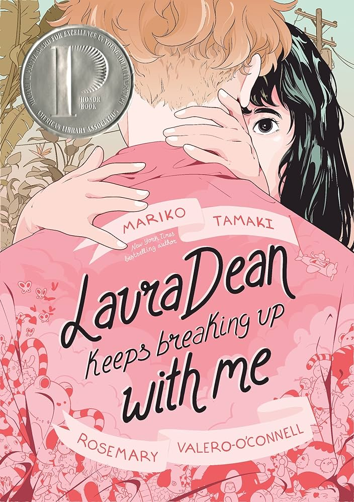
Describe the meaning that is conveyed to an audience conveyed by drawing attention to specific elements or emotions highlighted by the coloured accents, creating visual contrast and emphasis within the narrative.
How would you use colour to engage audiences? Audience able to engage, through use of monochromatic colour palette with pops of a singular significant that immediately grabs audience's attention, adding focus to specifically coloured area
How audiences would use colour to read meaning? the pages are predominantly black, white, and grey except for splashes of the most beatific shade of peachy-pink, which perfectly accentuate the bittersweet quality of this story of high-school heartache and friendship.
How you could incorporate colour into your own production design? Could solely use a strictly greyscale approach to colour, and slowly or in limited integration of one of few solid colours, adding visual interest and contrast to highlight a particular person, thing, plot point ect.
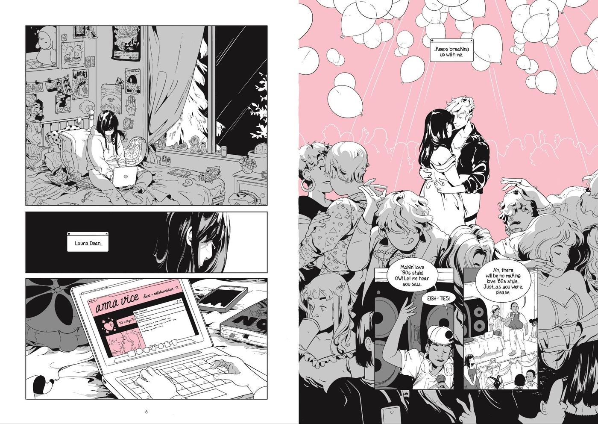
Le Marvelographe (inédit) Scénario : Normand Grégoire Julie Rocheleau accessed 20/2 http://jrocheleau.blogspot.com/p/bande-dessinee.html
Describe the meaning that is conveyed to an audience The earthy tones of orange and green, contrast well against each other and makes the respective forms stand out. Particularly used in a way through Rocheleau's panel, where the setting - background - is coloured in a muted green, and main figure is depicted in such a vibrant orange that sticks out - adding expression of style and personality.
How would you use colour to engage audiences? Audience able to engage, through use of contrasting, and limited duo-chromatic colour palette that immediately grabs audience's attention
How audiences would use colour to read meaning? Green linked with illness, tenacity, unchanging nature, as well as the environment. Rocheleau cleverly utilised its associated meanings in colouring the hospital setting in these varying values of green can reflect sickly nature and ambience in both the hospital itself, and the patient. Whereas orange is typically associated with feelings of warmth and enthusiasm, and is further developed by only using it for the unnamed female character making her stand out against the frail and nauseating nature of the hospital. Through use of these colours, audience are able to, just from a glance understand the general atmosphere and mood.
How you could incorporate colour into your own production design? Manipulate colour in my panels and/or character designs to reflect atmosphere; just through inference -implied knowledge of colour association-.
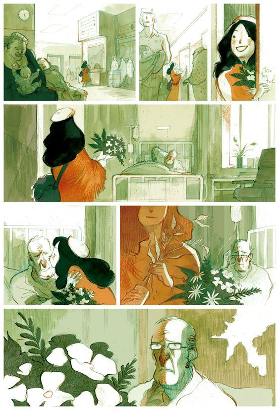
TYPOGRAPHY symbolic
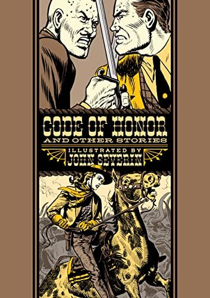
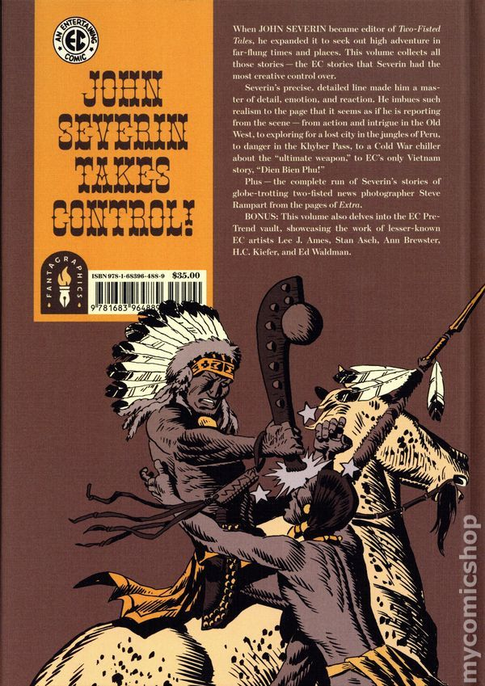
"Code of Honor and Other Stories", John Severin and Will Elder accessed 20/2 https://www.fantagraphics.com/products/code-of-honor-and-other stories#:~:text=This%20volume%20collects%20all%20those,he%20is%20to%20pistol%20duels.
AUDIENCE RECEPTION: ⭐⭐⭐.5/5, GOODREADS https://www.goodreads.com/book/show/57322556-code-of-honor-and-other-stories?ref=nav_sb_ss_1_23
Describe the meaning that is conveyed to an audience. How are audiences able to read its meaning through typography? By using Western-style fonts reminiscent of saloon signage or cowboy posters, creators can transport readers to the rugged landscapes and frontier towns of the American West. Additionally, incorporating typography inspired by Southern vernacular traditions, such as ornate script fonts or rustic lettering, can further enhance the sense of place and time, immersing audiences in the rich tapestry of Southern culture. Ultimately able to evoke the ambiance and ethos of these iconic settings, enhancing the overall reading experience and evoking a sense of nostalgia or authenticity for audiences.
How would you use the code/conventions to engage audiences? Incorporating typography inspired by Southern vernacular traditions, such as ornate script fonts or rustic lettering, adds depth and authenticity to scenes set in the Southern United States instantly transporting readers to the iconic settings of the American West.
How you could incorporate the code/convention into your own production design? Manipulate specific code in my own product by employing typography and fonts that reflect the genre, and align with.
MISE EN SCENE symbolic
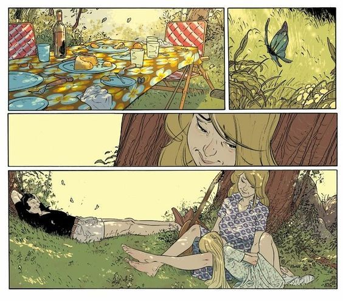
PROPS/OBJECTS
"untitled, Jordi Lafebre accessed 21/2 https://designyoutrust.com/2022/01/the-superb-graphic-novels-and-character-art-works-of-jordi-lafebre/
Describe the meaning that is conveyed to an audience. How are audiences able to read its meaning through props? The cluttered picnic blanket with half-eaten food on a sunny grassy hill conveys a sense of relaxation, leisure, and the passage of time to audiences. Through the presence of scattered food items and disarray on the blanket, viewers can infer that the characters have been enjoying a picnic and have likely spent a significant amount of time together in this tranquil outdoor setting. The half-eaten food suggests a moment of pause or interruption in the leisurely activity, hinting at the transient nature of the scene and the fleetingness of moments of joy and connection. The sunny, grassy hill further enhances the idyllic and carefree ambiance of the setting, evoking feelings of warmth, comfort, and nostalgia.
How would you use props to engage audiences? Creates a relatable and immersive scene that resonates with familiar experiences. By depicting a common activity like a picnic, viewers are drawn into the narrative through their own memories and associations with similar moments spent outdoors with loved ones. The props scattered around adds depth and authenticity to the scene, making it feel lived-in and believable.
How you could incorporate use of props into your own production design?
I could incorporate props by strategically placing certain objects in the background of character settings, like their room, or environment that can reflect their personality, giving depth to the character.
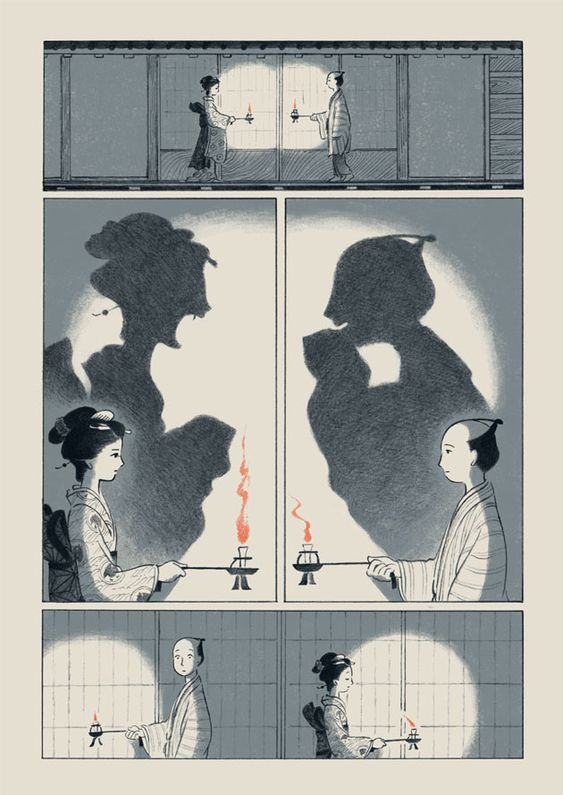
COSTUMES
"1ページ漫画", Yuka Osada accessed 20/2 https://www.osadayuka.com/comics?pgid=kiquh7kn-6b2c50ab-f46b-459a-8ec1-e474fae35260
Describe the meaning that is conveyed to an audience. How are audiences able to read its meaning through costume? The characters wearing traditional Japanese clothing convey a sense of cultural identity, authenticity, and historical context to the audience. Through the costumes, viewers are transported to a specific time and place within Japanese culture, evoking a sense of tradition and heritage. The intricate designs, fabrics, and styles of the clothing provide visual cues that communicate the social status, personality traits, and roles of the characters within the narrative
How would you use costumes to engage audiences? By dressing characters in attire that reflects the cultural norms and historical context of Japan, viewers are drawn into a world that feels genuine and believable. Additionally, the costumes serve as visual storytelling devices, providing insights into the characters' backgrounds, societal roles, and personal identities.
How you could incorporate costumes into your own production design?
Could utilise costumes of characters to be able to enhance worldbuilding and act as visual cues for information about the character (showing not telling). making them more believable and tangible to the readers.
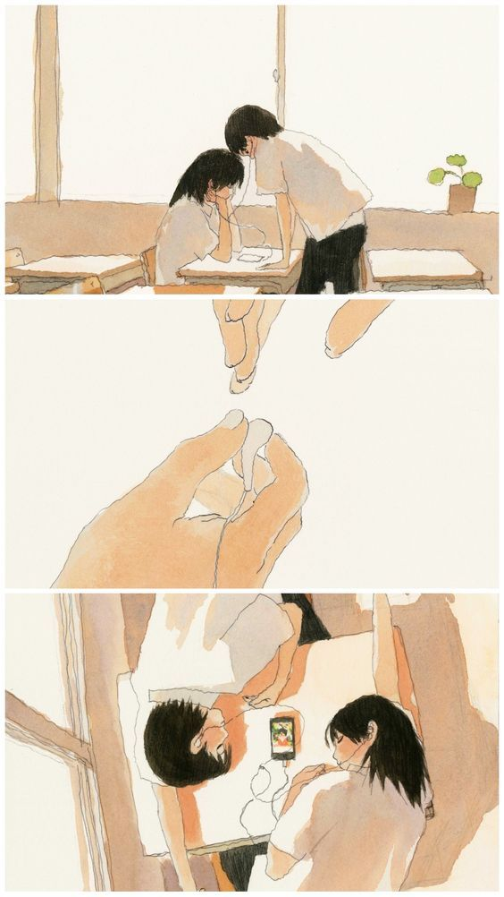
SETTING
"Love, Yerin", Seongryul accessed 22/2 https://www.pinterest.com.au/pin/659003358004524706/
Describe the meaning that is conveyed to an audience. How are audiences able to read its meaning through setting? The contrast between the typically structured and formal environment of a classroom and the relaxed demeaner of the characters, viewers understand that the students are engaging in an unauthorised or unconventional activity. The emptiness of the classroom suggests a temporary escape from the pressures and responsibilities of academic life, creating a space for personal connection and relaxation. Additionally, the choice to listen to music together implies a shared sense of camaraderie and mutual understanding between the characters, deepening their bond and reinforcing themes of friendship and youthfulness.
How would you use settings to engage audiences? Effectively engages audiences by tapping into shared experiences and emotions, drawing them into the narrative and fostering a deeper connection with the characters and their journey.
How you could incorporate settings into your own production design? placing certain events and scenes in correlating settings can further enhance meaning, and give context to the situation.
CAMERA TECHNIQUES - SHOT SIZES technical
EXTREME CLOSE UP
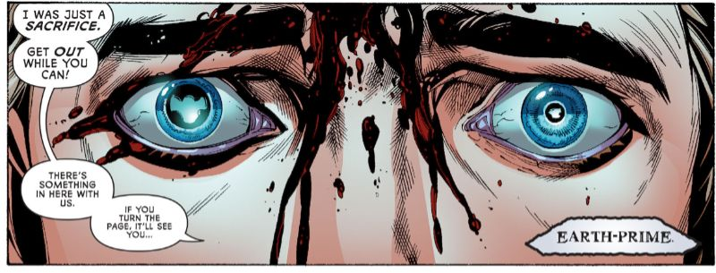
"The Multiversity", Grant Morrison accessed 26/2 http://www.multiversitycomics.com/ AUDIENCE RECEPTION: ⭐⭐⭐⭐/5, GOODREADS https://www.goodreads.com/book/show/25241708-the-multiversity?from_search=true&from_srp=true&qid=tlTdxjV2dq&rank=1
Describe the meaning that is conveyed to an audience. How are audiences able to read its meaning through an extreme close-up? the intensity of emotion is palpable, as the widened eyes become a window into the character's inner turmoil. The dilation of pupils and the the tension in the surrounding muscles all contribute to a sense of vulnerability and apprehension. Audiences are drawn into the character's experience, empathizing with their fear and feeling a heightened sense of tension and suspense.
How would you use extreme close-ups to engage audiences? As audiences gaze into the character's eyes, they become immersed in the intensity of the moment, empathising with their fear and feeling a surge of adrenaline. Through the extreme close-up, viewers are able to intimately connect with the character's emotional state, allowing for a more immersive and impactful storytelling experience.
How you could incorporate an extreme close-up into your own production design?
using extreme close-ups in moments of significant intense emotion, so as to further convey it to audience, demonstrating character vulnerability and intimacy on a more heightened manner.
ESTABLISHING SHOT
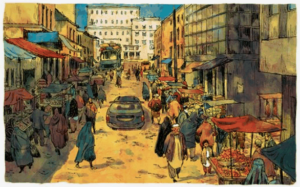
"Grand Reporter - Afghanistan 2010", Ed. Dupuise accessed 26/2 https://www.behance.net/gallery/576192/Comic-Books-Graphic-Novels
Describe the meaning that is conveyed to an audience. How are audiences able to read its meaning through an establishing shot? An establishing shot depicting a bustling road lined with stalls in the Middle East conveys a sense of vibrancy, diversity, and cultural richness to audiences. Through this wide-angle view, viewers are immediately immersed in the bustling atmosphere of the setting, with the various stalls and activities hinting at the vibrant street life and commerce of the region. The diverse crowd of people milling about, and the architecture in the background all contribute to a vivid sense of place and identity. Audiences are able to infer the hustle and bustle of daily life, the interplay of tradition and modernity, and the unique cultural tapestry of the Middle East. Through the establishing shot, viewers are transported to a dynamic and evocative setting, setting the stage for the narrative to unfold within this rich and immersive world
How would you use an establishing shot to engage audiences? The establishing shot serves to orient audiences spatially within the story, providing them with a visual anchor that helps them understand the geographic and cultural landscape in which the events unfold, inviting the audience to become active participants to the narrative
How you could incorporate an establishing shot into your own production design? can use establishing shots at beginning of chapters, when introducing new settings, or when moving between locations, giving audience sense of setting and context for upcoming scenes. as well as adding to the worldbuilding.
VISUAL COMPOSITION symbolic
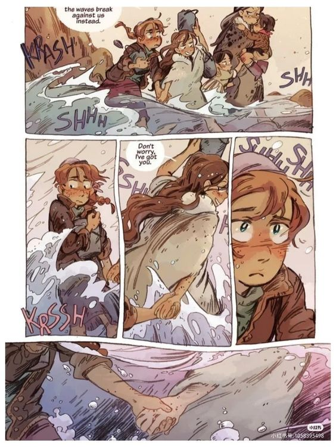
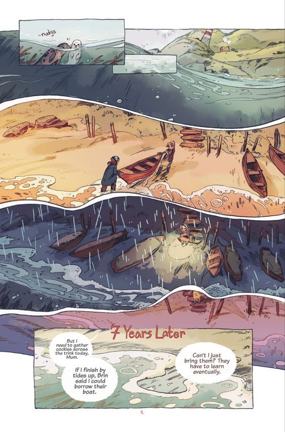
"One Spared to the Sea", Sarah Webb accessed 19/2 https://sarahwebb.site/one-spared
Describe the meaning that is conveyed to an audience. How are audiences able to read its meaning through visual composition?
The intentional use of wavy panels to mirror waves and water in the visual composition conveys a sense of fluidity, movement, and immersion to the audience. Through the distortion of panel shapes, viewers are immediately drawn into the dynamic and ever-changing world depicted within the graphic novel. The wavy panels serve as visual cues that reflect the thematic elements of water, whether it be the ocean, a river, or a rainfall, enhancing the storytelling and atmosphere of the scene
How would you use the visual composition to engage audiences? Engages audiences by creating a sense of movement and dynamism that draws them into the scene. This unique approach to visual composition adds an element of excitement and unpredictability to the storytelling, keeping audiences actively engaged and curious about what will happen next. Additionally, the thematic resonance of the wavy panels with the elements depicted within them, such as waves or water-related imagery, deepens the immersive experience for audiences, fostering a stronger emotional connection to the story.
How you could incorporate visual composition into your own production design? similarly draw panels unconventionally to reflect the setting of location, adding to the overall atmosphere of the panel pages.
GRAPHICS technical
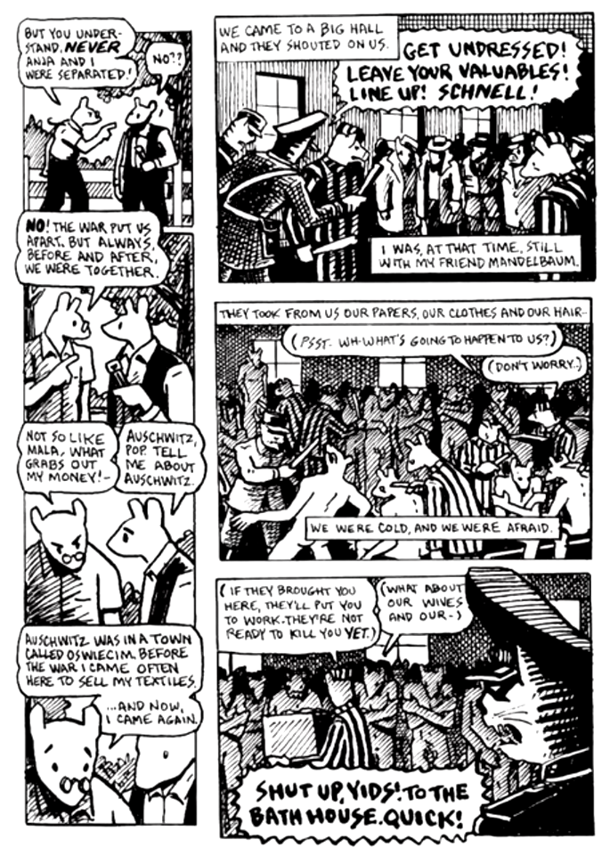
"MAUS", Art Spiegelman accessed 20/2 https://www.goodreads.com/book/show/15195.The_Complete_Maus
AUDIENCE RECEPTION: ⭐⭐⭐⭐.5/5, GOODREADS
Describe the meaning that is conveyed to an audience. How are audiences able to read its meaning through graphics?
Subverts the conventional reading flow, achieved by the strategic placement of speech bubbles within comic panels. By guiding the reader's eye in unexpected directions, such as going down the page first, rather than the normalised left to right, creators can evoke feelings of disorientation, surprise, or tension. This intentional disruption of the reading flow prompts audiences to actively engage with the visual storytelling, as they must navigate the sequence of panels in a more deliberate and immersive manner.
How would you use graphics to engage audiences?
This deliberate disruption of the reading flow prompts readers to pause, reflect, and interpret the sequence of events more deeply, fostering a heightened sense of immersion and investment in the story.
How you could incorporate graphics into your own production design?
following maus example I could subvert traditional order of panels on the page, adding visual interest for the audience and mix up style of pages.